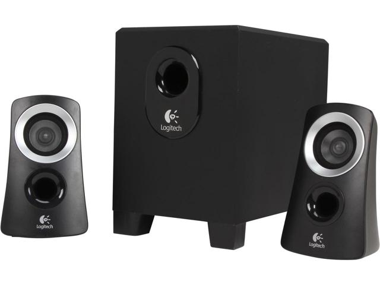
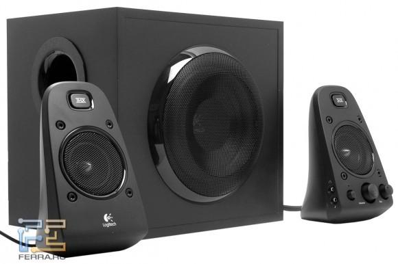
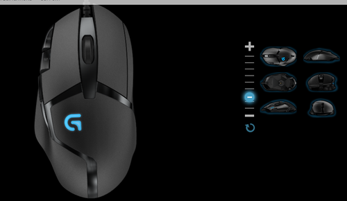
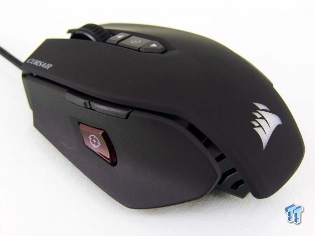
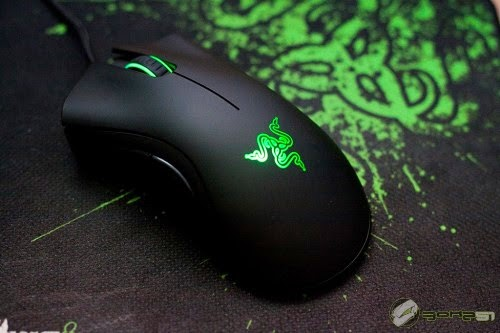

Tras meses (o años) de sangre y trabajos forzados,tienes recien comprada tu PC Gamer, tan bonita y reluciente... un momento, ¿y ahora que? Pues bien amigo, es cierto que tienes la pieza mas importante, la PC, pero si quieres sacarle todo el partido a tu compu, mas te vale echarle un vistazo a esto.
En este post me dispongo a enseñarles los mejores accesorios que conozco para jugar como nunca antes habias jugado, asique si no les importa, voy a empezar.Antes que nada, para los mas novatos en esto, 2.0 significa que son dos altavoces, 2.1 significa dos altavoces y un subwoofer, y 5.1 cinco altavoces y un subwoofer.
SISTEMA LOGITECH z313
SISTEMA LOGITECH z623
Es importante saber elegir el mouse correcto, y tener cierta información y conceptos en mente en el momento de elegirlo. El mouse debe tener precisión, descripción clara con respecto a la tecnología usada, mencionar el número de botones disponibles, especificar el diseño, aclarar para qué tipo de equipo fue creado, etc. Todos estos detalles necesitan ser analizados antes de la elección. Aca unos buenos mouses que son comodos y ergonomicos y estan actualmente en el mercado.
LOGITECH g402
MOUSE M65 PRO RGB CORSAIR
MOUSE RAZER DEATHADDER
Un buen teclado conlleva un conjunto de características que nos permiten escribir sin esfuerzo, nos ayudan a mejorar nuestra precisión y además añaden funciones que nos ahorran tiempo y trabajo, debido a esto, la diferencia entre un buen teclado y un teclado ordinario es un asunto de investigación y pruebas, tal vez cuando encontremos un buen teclado y este se adapte a nosotros nos diremos como pudimos haber vivido tanto si haber mejorado nuestro teclado.